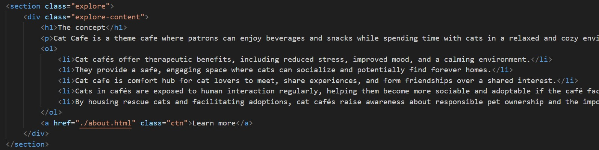
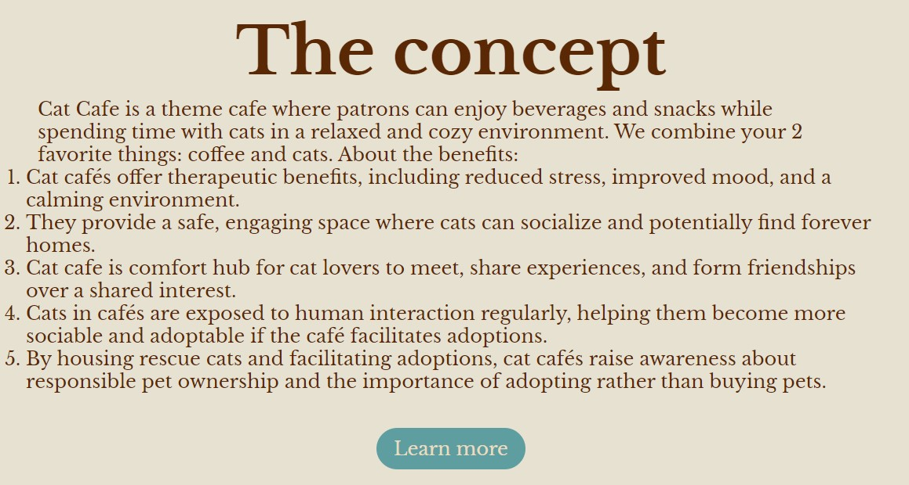

Список
 HTML підтримує різні типи списків для організації та представлення даних у структурованому вигляді. Списки можуть бути впорядкованими (нумерованими), невпорядкованими (з маркерами) та описовими (списками визначень). Типи списків у HTML: 1.Невпорядковані списки (unordered list) - Використовується для переліку елементів без певного порядку. Позначається тегом ul. Кожен елемент списку позначається тегом li (list item). За замовчуванням елементи мають маркери. 2.Впорядковані списки (ordered list) - Використовується для переліку елементів у певному порядку. Позначається тегом ol. Кожен елемент списку позначається тегом li. За замовчуванням елементи мають номери. 3.Списки визначень (definition list) - Використовуються для подання термінів і їх визначень. Позначаються тегами dl (definition list), dt (definition term), dd (definition description). Атрибути для списків: 1.type (Визначає тип маркерів або номерів: disc, circle, square); 1: Арабські цифри (1, 2, 3...). A: Великі літери (A, B, C...). a: Малі літери (a, b, c...). I: Римські цифри великі (I, II, III...). i: Римські цифри малі (i, ii, iii...). 2.start - Визначає початкове значення для впорядкованого списку. Використовується тільки з ol. 3.reversed - Робить список зворотним (декрементним). Використовується тільки з ol. 4.value - Визначає індивідуальне значення для елемента списку у ol. Списки можуть бути вкладеними, тобто один список може містити інший.